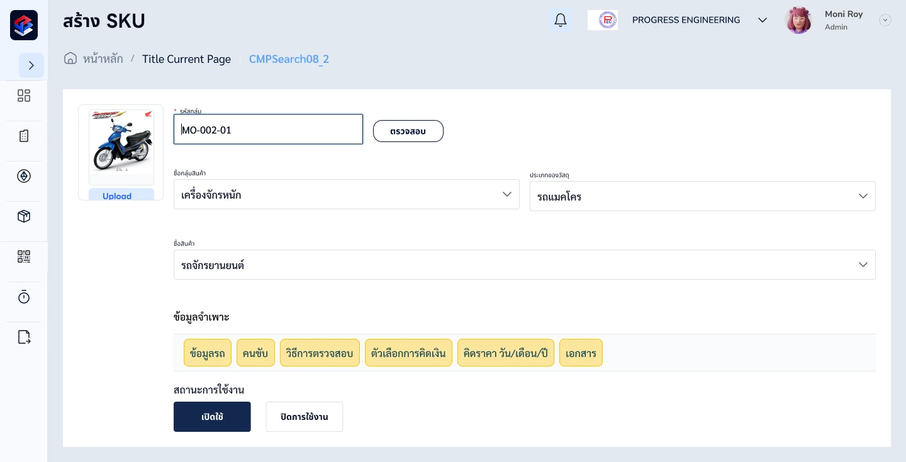
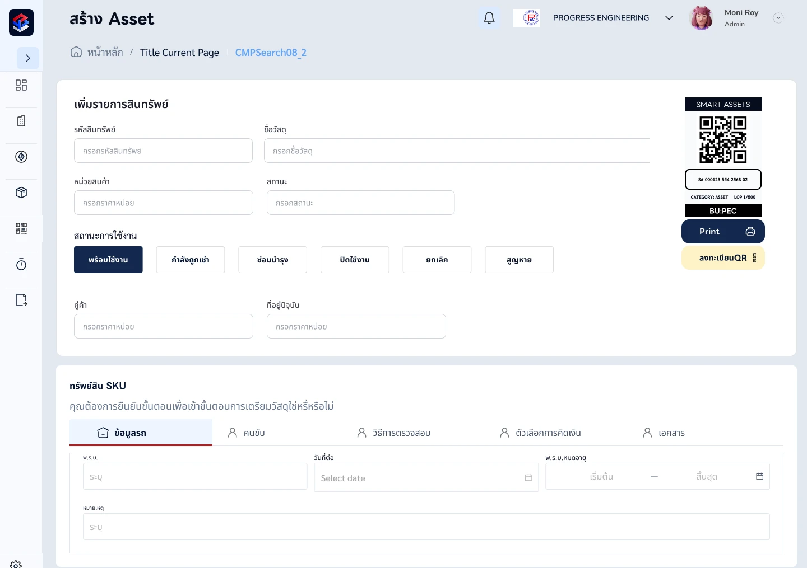
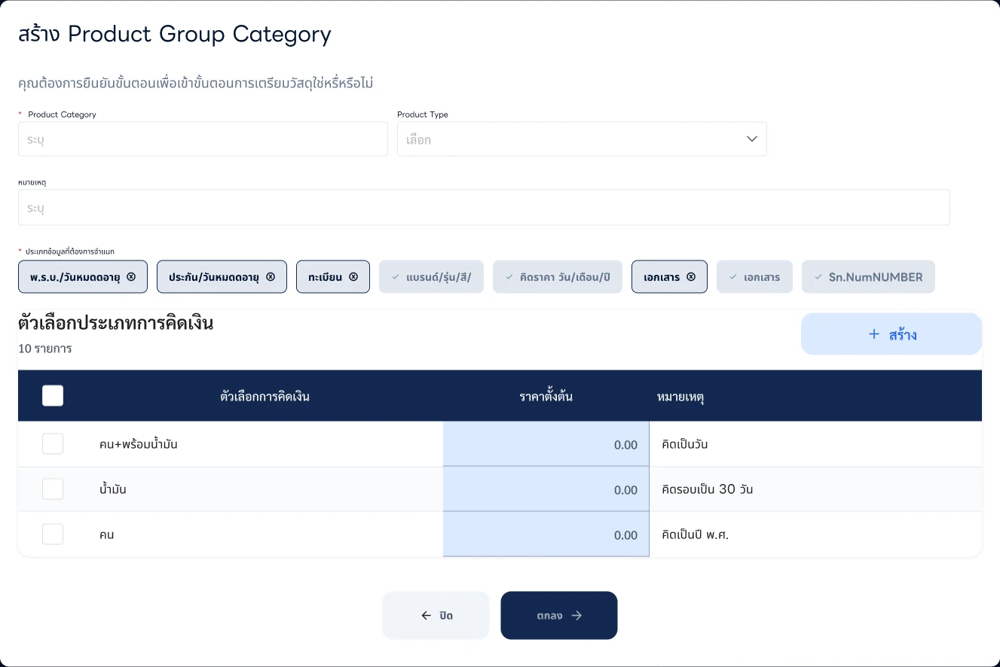
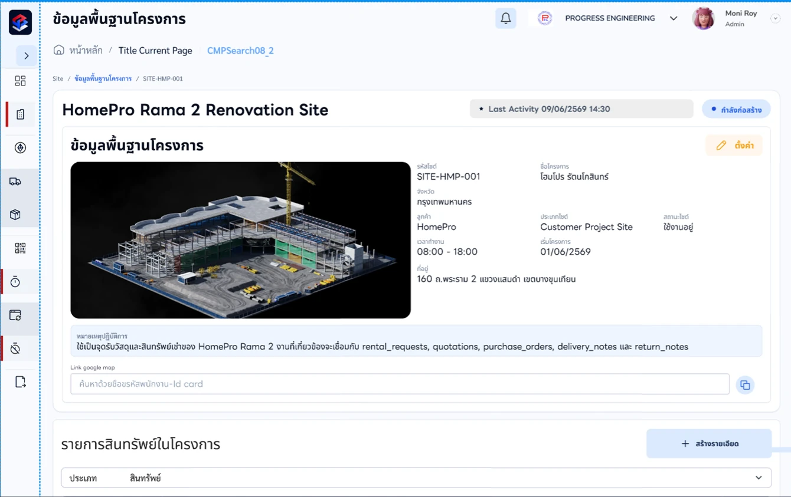
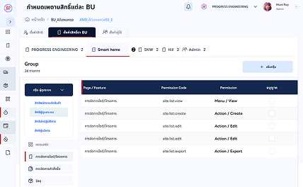
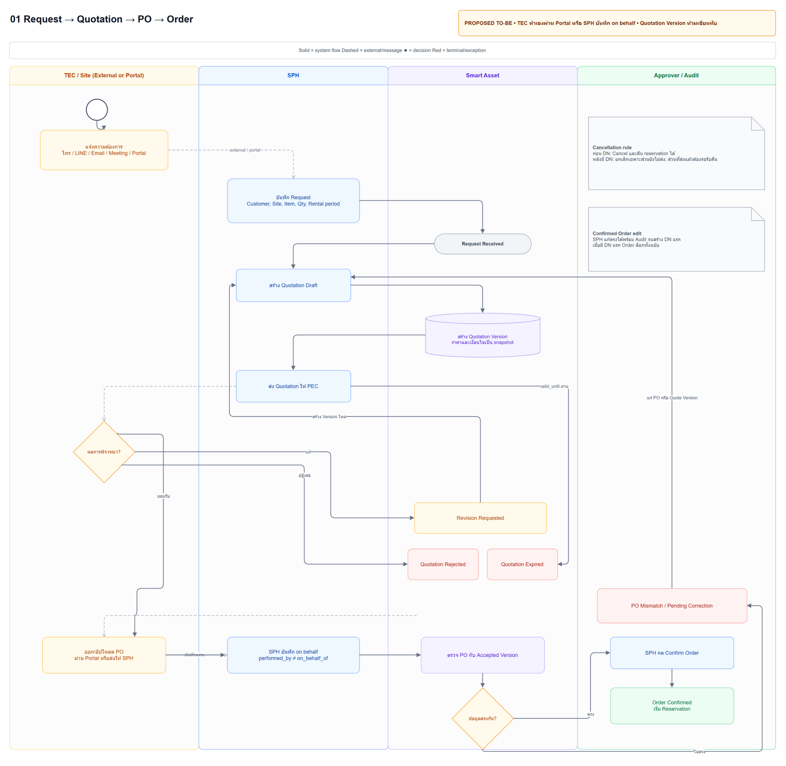
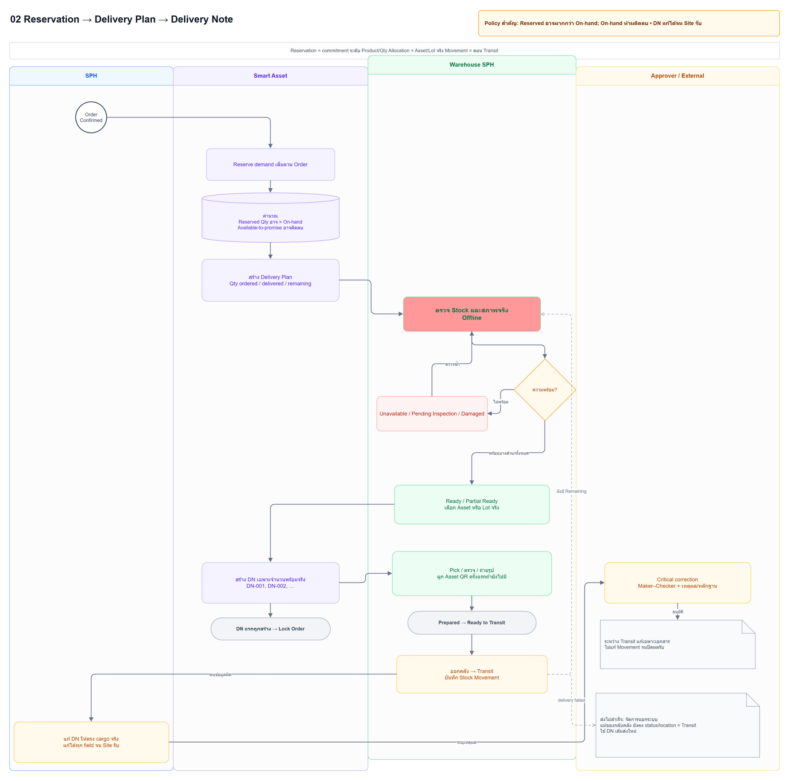
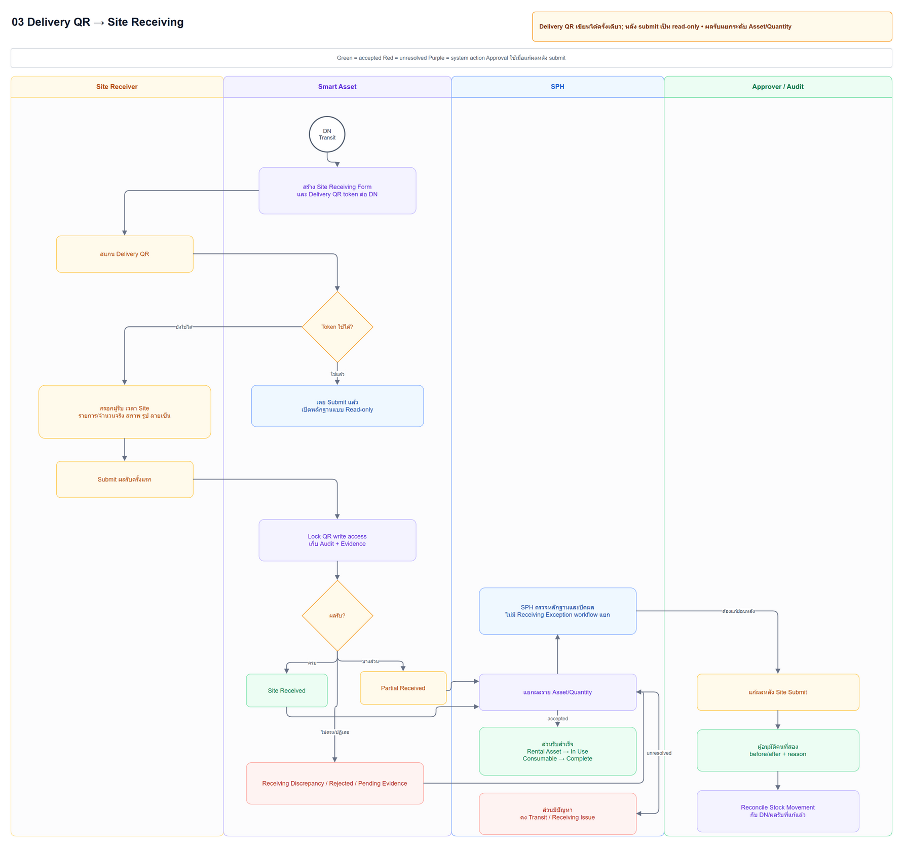
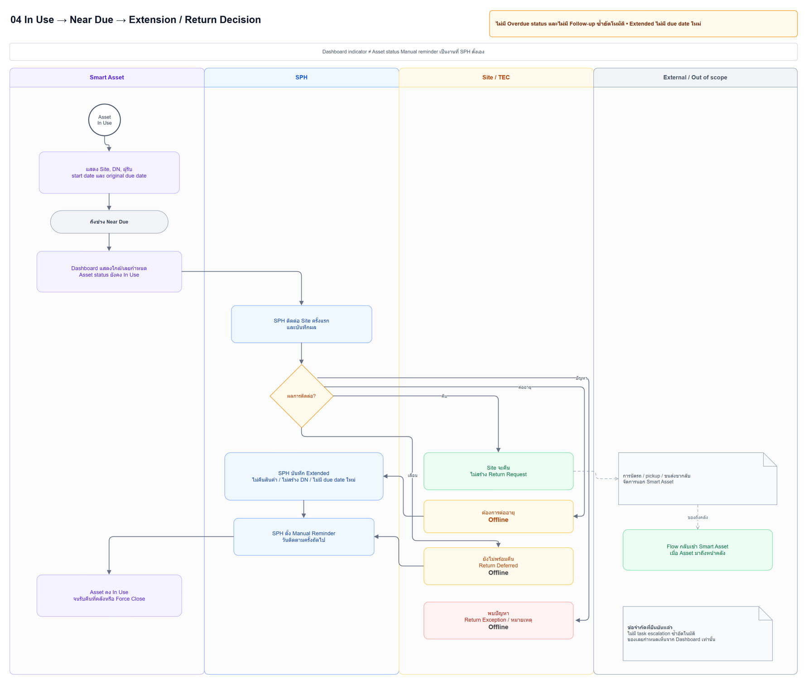
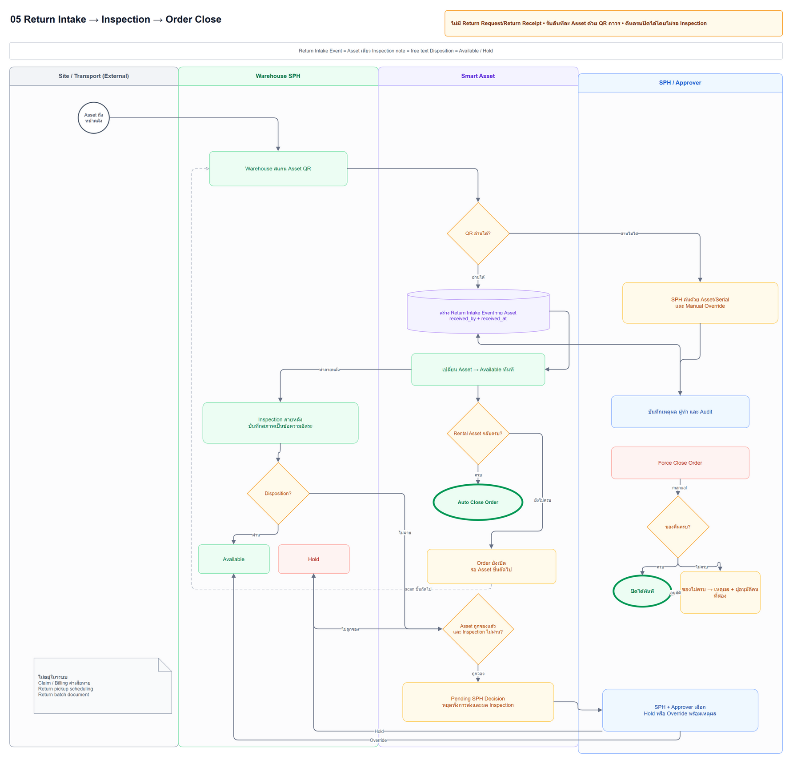

Category
กำหนดกติกาและช่องข้อมูล
ตามประเภททรัพย์สิน
กติกา + metadata
งานที่เชื่อมคน ข้อมูล กฎ และหลายทีม
เชื่อมขั้นตอนงานทรัพย์สิน
กับกติกาข้อมูล
จาก Category และ SKU
สู่ทรัพย์สินจริงที่มีตัวตนของตัวเอง


บทบาทในเคส: UX × SA Intern
สเปกเบื้องต้นและ UX/UI ร่วมกับ Software Engineer
PEC Smart Asset รองรับการจัดการทรัพย์สินและงานเช่า เคสนี้โฟกัส Master Asset ตั้งแต่กำหนดข้อมูล ไปจนถึงลงทะเบียนและตรวจดูทรัพย์สินจริง
ทรัพย์สินที่มีตัวตนรายชิ้น
ข้อมูลจำนวนและหน่วยที่ต่างออกไป
วงจรการใช้งานและอายุของข้อมูล
แบบฟอร์มเดียวกันทั้งหมด ไม่ช่วยแสดงข้อมูลเฉพาะที่แต่ละงานต้องใช้
ใช้ความสัมพันธ์ของข้อมูลเป็นกรอบของสเปกและ UX/UI ส่งต่อข้อมูลร่วม โดยคงตัวตนของทรัพย์สินแต่ละชิ้นไว้
กำหนดกติกาและช่องข้อมูล
ตามประเภททรัพย์สิน
เก็บนิยามสินค้าที่ใช้ซ้ำได้
เป็นโครงร่วมในการลงทะเบียน
ทรัพย์สินจริงรายชิ้น
มี QR สถานะ และบริบทไซต์
แยก “ข้อมูลที่ใช้ร่วมกัน” ออกจาก “ข้อมูลของทรัพย์สินแต่ละชิ้น”
เพื่อให้หน้าจอสื่อความสัมพันธ์เดียวกับโครงสร้างข้อมูล

เริ่มจากข้อมูลเฉพาะของประเภท แล้วใช้เป็นกติกาในการสร้างนิยามสินค้า
ภาพ UI จากเคสต้นฉบับ · คลิกภาพเพื่อเปิดขนาดเต็ม
ทรัพย์สินแต่ละชิ้นมี identity ของตัวเอง โดยยังเชื่อมกับนิยามข้อมูลจาก SKU

ผูกทรัพย์สินกับผู้รับผิดชอบและตำแหน่งใช้งาน แล้วติดตามสถานะตลอด lifecycle
ภาพ UI จากเคสต้นฉบับ · อ่าน flow แบบเชื่อมหน้าจอได้ในเคสออนไลน์
รับผิดชอบสเปกเบื้องต้น และร่วมออกแบบ UX/UI กับ workflow คู่กับ Software Engineer
ใช้ Category → SKU → Asset เป็นฐานในการอธิบายงาน
เป็นเครื่องมือสนับสนุนการทำงานในบทบาท UX × SA Intern
ทบทวนกับ Engineer เพื่อเชื่อมงานออกแบบกับเงื่อนไขทางเทคนิค

ภาพนี้ใช้ประกอบบริบทการออกแบบสิทธิ์ ไม่ใช่ผลการประเมินประสิทธิภาพของระบบ
ขอบเขตที่ยืนยันในเคสเดิม: Master Asset
ผู้ใช้ยังไม่เข้าใจว่าทำไมต้องสร้าง SKU ก่อนทรัพย์สินจริง ขณะเดียวกันข้อมูลจากการย้ายระบบสองรอบยังมาไม่ครบ ทำให้การเพิ่มข้อมูลจำนวนมากติดขัด
เติมและปรับข้อมูลนำเข้า พร้อมเพิ่มทางเข้าดู Asset โดยตรง แต่ยังคงความสัมพันธ์กับ SKU และข้อกำหนด SKU ในขั้นตอนสร้าง Asset
ทางเข้าดู Asset โดยตรงยังเป็นแผนปรับปรุง และยังไม่ได้ประเมินผลหลังปรับ
การเริ่มใช้งาน Master Asset ไม่ได้หมายถึงทุกโมดูลในงานเช่า
ชุดแผนภาพประกอบความเข้าใจตั้งแต่คำขอไปจนถึงการคืนและวางบิล เป็นหลักฐานการคิด flow ไม่ใช่การยืนยันว่าทุกโมดูลเริ่มใช้งานแล้ว

เปลี่ยนความต้องการเช่าเป็นใบเสนอราคาที่มีเวอร์ชัน การตัดสินใจของลูกค้า และออเดอร์ที่ยืนยันแล้ว

แยกการจอง การเตรียมของ รอบส่ง และการเคลื่อนย้ายทรัพย์สินหรือ lot จริงออกจากกัน

ใช้ QR ของการส่งและ QR ถาวรของทรัพย์สินเพื่อบันทึกผลรับจริงและกรณียกเว้นที่ต้นทาง

แยกสถานะทรัพย์สินออกจากการเตือนกำหนดคืนและการต่อระยะเวลาเช่าแบบ manual

รองรับการคืนบางส่วน หลักฐาน การตรวจสภาพ การพักทรัพย์สิน และการปิดงานเชิงบริหาร
เปิดภาพและอ่านรายละเอียด
ในเคสออนไลน์
บทเรียนจากเคสนี้คือ โครงสร้างข้อมูลที่ถูกต้องเพียงอย่างเดียว ยังไม่พอให้ผู้ใช้เข้าใจว่าจะเริ่มงานตรงไหน
การวางความสัมพันธ์ Category → SKU → Asset ช่วยกำหนดกรอบของระบบ ส่วนข้อสังเกตจากการใช้งานช่วยชี้ว่า “ทางเข้า” ยังต้องปรับให้สอดคล้องกับความเข้าใจของคน
อ่าน PEC Smart Asset บนเว็บไซต์ ↗vagueslim.github.io/portfolio/th/smart-asset.html
เรียบเรียงจากหน้า PEC Smart Asset ใน Portfolio และภาพหลักฐานเดิม · ฉบับ HTML สำหรับตรวจเลย์เอาต์ A4 · 14 ตุลาคม 2026